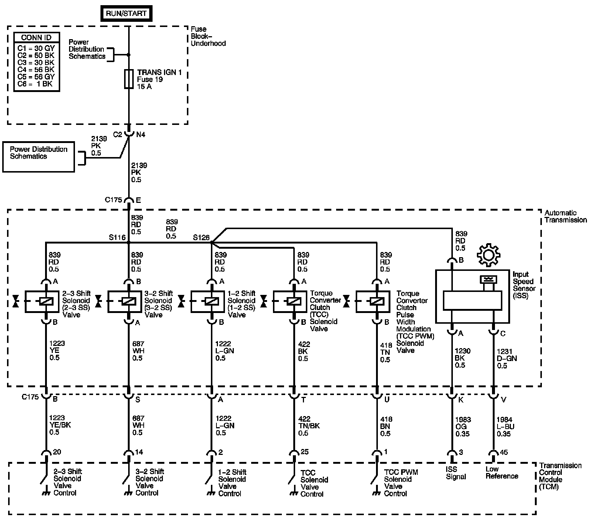

4L60-E / 4L65-E / 4L70-E Automatic Transmission
DTC P0717

Circuit Description
The automatic transmission input shaft speed (AT ISS) sensor assembly is a three-wire hall-effect sensor that is mounted internally to the transmission on the oil pump assembly. The AT ISS utilizes the gear teeth, located on the turbine shaft, to generate a voltage signal of varying frequency that corresponds to the rotational speed of the turbine shaft. The AT ISS signal is an input to the transmission control module (TCM) and is used to determine line pressure, transmission shift patterns, torque converter clutch (TCC) slip speed and gear ratio.
If the TCM detects AT ISS input less than 100 RPM with the engine running, DTC P0717 sets. DTC P0717 is a type B DTC.
DTC Descriptor
This diagnostic procedure supports the following DTC:
DTC P0717 Input Speed Sensor Circuit Low Voltage
Conditions for Running the DTC
^ No vehicle speed sensor (VSS) DTCs P0722 or P0723.
^ No AT ISS DTC P0716.
^ The vehicle speed is greater than 16 km/h (10 mph).
^ The engine torque is greater than 50 N.m (37 lb ft).
Conditions for Setting the DTC
The AT ISS RPM is less than 100 RPM for 5 seconds.
Action Taken When the DTC Sets
^ The TCM requests the engine control module (ECM) to illuminate the malfunction indicator lamp (MIL) during the second consecutive trip in which the Conditions for Setting the DTC are met.
^ The TCM commands maximum line pressure.
^ The TCM freezes transmission adapts.
^ The TCM calculates a default AT ISS RPM.
^ The ECM records the operating conditions when the Conditions for Setting the DTC are met. The ECM stores this information as Freeze Frame and Failure Records.
^ The TCM records the operating conditions when the Conditions for Setting the DTC are met. The TCM stores this information as Failure Records.
^ The TCM stores DTC P0717 in TCM history during the second consecutive trip in which the Conditions for Setting the DTC are met.
Conditions for Clearing the MIL/DTC
^ The ECM turns OFF the MIL after the third consecutive drive trip in which the TCM does not send an MIL illumination request.
^ A scan tool can clear the MIL/DTC.
^ The TCM clears the DTC from TCM history if the vehicle completes 40 warm-up cycles without an emission-related diagnostic fault occurring.
Diagnostic Aids
^ Inspect the connectors at the TCM, the AT ISS, and all other circuit connecting points for an intermittent condition. Refer to Testing for Intermittent Conditions and Poor Connections. Component Tests and General Diagnostics
^ Inspect the circuit wiring for an intermittent condition. Refer to Testing for Electrical Intermittents. Component Tests and General Diagnostics
^ Road test the vehicle while monitoring the Transmission ISS parameter on the scan tool. The Transmission ISS parameter should vary with engine speed changes and not abruptly drop out.
^ Inspect for an open or shorted AT ISS wire.
^ Inspect for a disconnected AT ISS connector.
^ Inspect for a faulty AT ISS.